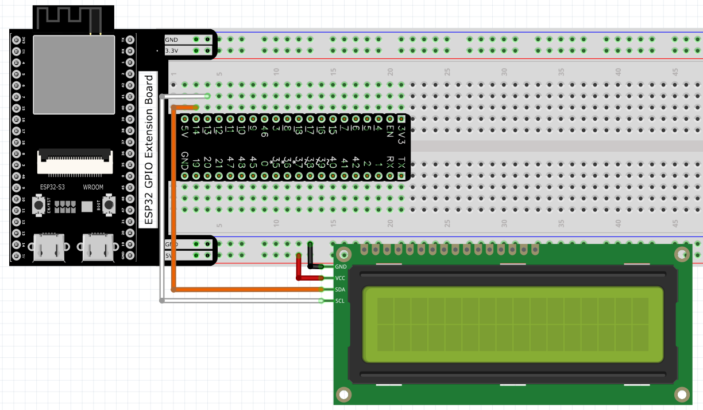
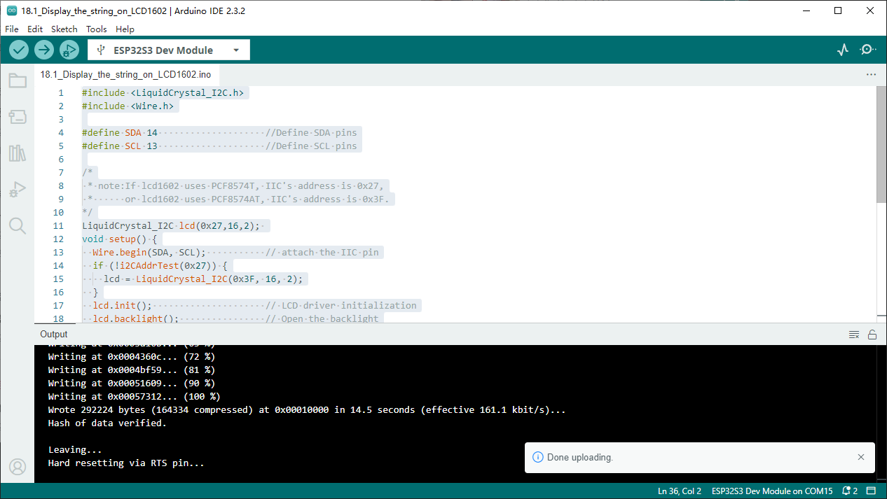

Chapter 18 LCD1602
In this chapter, we will learn about the LCD1602 Display Screen
Project 18.1 LCD1602
In this section we learn how to use LCD1602 to display something.
Component List
ESP32-S3-WROOM x1
GPIO Extension Board x1
830 Tie-Points Breadboard x1
LCD1602 IIC x1
F-M DuPont Cable x4
Connect
Sketch
How to install the library
We use the third party library LiquidCrystal I2C. If you haven’t installed it yet,
please do so before learning. The steps to add third-party Libraries are as follows:
open arduino->Sketch->Include library-> Add .zip Library…. Select “Super_S
tarter_Kit_for_ESP32_S3CLibrariesLiquidCrystal_I2C.zip” for installation.
Use I2C LCD 1602 to display characters and variables.
Sketch_18.1_Display_the_string_on_LCD1602
Compile and upload the code to ESP32-S3 WROOM and the LCD1602 displays characters.

Code
The following is the program code:
#include <LiquidCrystal_I2C.h>
#include <Wire.h>
#define SDA 14 //Define SDA pins
#define SCL 13 //Define SCL pins
/*
* note:If lcd1602 uses PCF8574T, IIC's address is 0x27,
* or lcd1602 uses PCF8574AT, IIC's address is 0x3F.
*/
LiquidCrystal_I2C lcd(0x27,16,2);
void setup() {
Wire.begin(SDA, SCL); // attach the IIC pin
if (!i2CAddrTest(0x27)) {
lcd = LiquidCrystal_I2C(0x3F, 16, 2);
}
lcd.init(); // LCD driver initialization
lcd.backlight(); // Open the backlight
lcd.setCursor(0,0); // Move the cursor to row 0, column 0
lcd.print("hello, world!"); // The print content is displayed on the LCD
}
void loop() {
lcd.setCursor(0,1); // Move the cursor to row 1, column 0
lcd.print("Counter:"); // The count is displayed every second
lcd.print(millis() / 1000);
delay(1000);
}
bool i2CAddrTest(uint8_t addr) {
Wire.beginTransmission(addr);
if (Wire.endTransmission() == 0) {
return true;
}
return false;
}